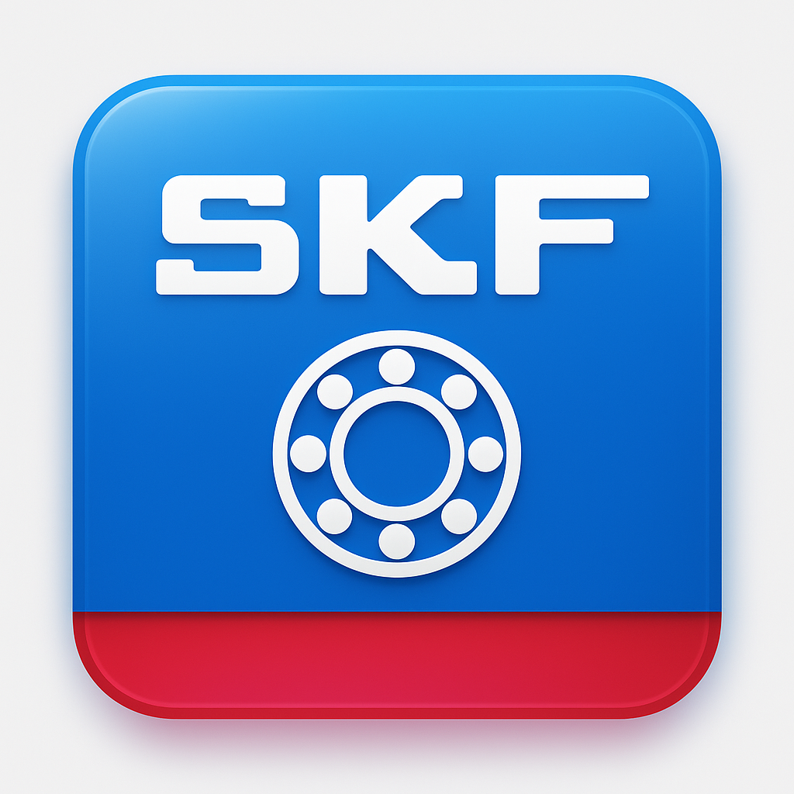

SKF 5S
Vai alla checklist →
CH 24 — Rettifica
Cosa è 5S
1S Selezionare
— Eliminare il superfluo.
2S Sistemare
— Un posto per tutto.
3S Splendere
— Pulire e prevenire lo sporco.
4S Standardizzare
— Regole e segnali chiari.
5S Sostenere
— Abitudine e miglioramento continuo.
Andamento CH 24